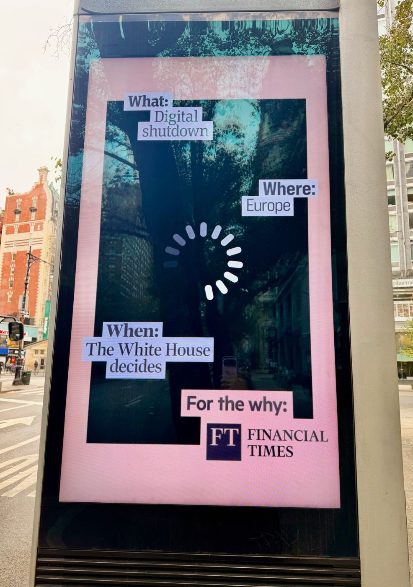

Layer 6 · Software technology
“It Is Certainly a Bitter Pill, Because at the Moment We Have No Other Choice”
The past two weeks have been a whirlwind: developments in tech sovereignty happen quicker than our signals section can update and I have been moving back to the USA East Coast for a while to drive the next phase of this research project from there. Much to report already from this side of the Atlantic, but for that, there will be a separate post elsewhere. Just one cliffhanger picture below on how the Americans see the tech sovereignty debate:

As a consequence, this week's briefing, BeyondBeta #5, is once again real teamwork, with Marie finding with Prof. Rainer Stark someone who is truly at the heart of the key assumptions behind the German government's NVIDIA deal announcement. Hanna kindly drove the interview prep, and I recalled how often we have been here before, a big tech (or Big Tech?) announcement by the government, high hopes, and then...? But let us start at the beginning and then give the word to Rainer Stark.
Is Germany Buying Its Way Back Into the AI Race, or Into Its Next Platform Dependency?
As we write, the Federal Ministries for Economic Affairs and for Research signed a letter of intent with Nvidia to build specialized, open models for industrial and physical AI. Scooped first by Luisa Bomke, Felix Holtermann and their colleagues in Handelsblatt, the government is prepared to invest a three-digit million euro sum; Siemens, Audi and Black Forest Labs are among around a dozen companies set to join. Siemens wants to turn its Erlangen plant into "a blueprint for autonomous factories all over the world", built on Nvidia's Omniverse. The direction is right. But the core of German industry will run on the stack of one American company, which also gets to set the standards. And many large corporates and SME alike will find themselves faced with a choice: accept the new platform dependency or miss out on this push? Because one thing has become very clear with this deal and during Jensen Huang's entire Europe trip: the narrative that NVIDIA is purely providing the hardware and infrastructure for AI is void.
"It is certainly a bitter pill, because at the moment we have no other choice," says Rainer Stark, Head of the Department of Industrial Information Technology at TU Berlin, and our Beyond Beta guest this week. After 14 years at Ford, where he shared global responsibility for the digital development environment across five brands, he has spent almost two decades arguing that Germany must bring its industrial data "up from the basement": at TU Berlin, at Fraunhofer and today on the spokesperson team of the Industrie 4.0 Research Advisory Board and as a vital member of acatech, a close government advisor and frequent guest in the Chancellery for years.
With Rainer Stark, we discuss whether the Nvidia pact is a trigger or a trap, what a European alternative built on open source and IPCEI AI could look like, and which KPIs would tell us that we are on the right track to 2030.
The German Government's Nvidia Deal: Good News or Bitter Pill?
Kirsten Rulf and Hanna Mrugalla: The German government has confirmed that it intends to invest a three-digit million euro sum in a collaboration with Nvidia to develop industrial AI in Germany. From the perspective of strategic and digital sovereignty as well as competitiveness: is this investment in your opinion good news, partly good news, or rather a signal that German industry has simply not managed to become digitally competitive on its own and does not expect to catch up anymore without a US tech leader?
Rainer Stark: I would first assess it as decidedly positive news. It shows that the government is serious about tech transformation and that it is not as indifferent as it appeared until now. This deal can certainly act as a trigger for the economy as a whole, and that signal is important. It definitely pushes the German industry into the right direction: Our traditional industrial sectors, e.g. the automotive industry, which do bring a great many innovations with them, now have to become more daring on the digital front, too, rather than continue to show their hesitancy of the past. Jensen Huang made that very clear again over the weekend, noting that Germany has let too much potential slip away. For that reason, this initiative from the federal government is first and foremost very positive.
Kirsten Rulf and Hanna Mrugalla: On the other hand, this deal once again means becoming dependent on an American company, like with the cloud hyperscalers or frontier AI labs, this time offering up the crown jewels of German industry. NVIDIA also effectively get to set industry standards for this new realm of physical AI with its Omniverse. Is that the bitter pill that Europe now must swallow?
Rainer Stark: It is certainly a bitter pill, because it shows that at the moment, we have no other choice than to depend on yet another US tech giant in a core realm of digital value creation. So, this needs to be a wakeup call and we need to start now to develop other options for the future. The deal cannot be a one-off or one-sided step only, but it needs to spur further activities, and they will probably have to be pan-European from the outset, as with IPCEI AI. This deal must finally lead us to ask which technological capabilities and infrastructures we need independently. If we do not want or are not able to copy the full scope of Chinese and US activities along the entire tech stack, then which independent capabilities of our own do we need on a smaller scale? And how would that also increase our agility and competitiveness as a Middle Power?
We at TU Berlin are, for example, discussing all the time with corporates like Siemens and others if they really know what it means to encapsulate intelligence from Germany in AI models to derive competitive advantages in the short-term, while using a technology that we cannot handle sovereignly and independently. And how they can at least protect themselves somewhat technologically. That is certainly anything but ideal, but given how rapidly technology landscapes are developing, it is unfortunately unavoidable.
For example, our industry giants should consider whether they need to approach certain domains with open-source AI and other tech capabilities independent from US and China here in Europe. From my point of view, the Siemens strategy of a "ONE Tech Company" may not yet be fully and maturely thought through for the long haul, compared to the strategy which German industry players need and ought to put in place to survive and thrive in the rapidly evolving and sharply competitive future.
How Do We Avoid a New Platform Dependency?
Kirsten Rulf and Hanna Mrugalla: How can we prevent the situation in 2030 from being exactly the same as today? How do we avoid creating another platform dependency?
Rainer Stark: We will see well-known European companies get involved in the IPCEI AI call, and open-source will play a major role there as a counterweight to the closed shop of the American style digital providers. Jointly we will tackle questions like "How can we provide entirely sovereign and encapsulated AI for our companies, wherever specific know-how is needed, on affordable hardware, so that it can be applied where value creation needs it the most?" For that, we have to come up with smarter trained models that can be conditioned and deployed differently than today's US and Chinese frontier models.
The question for us in Germany is currently whether the federal government, including through its instruments for breakthrough innovation like SprinD, will help support open-source as a serious alternative in the European sector. We have not yet seen proof of that. So far, we have heard rather ambivalent signals from the Federal Ministry for Economic Affairs; start-ups and university institutes are deliberately not funded. That irritates us a great deal, and it is not the case in other European countries.
What Can the IPCEI AI Truly Achieve?
Kirsten Rulf and Hanna Mrugalla: Everyone knows the US closed frontier AI models; they are household names. You are deeply involved in the European IPCEI for AI, which is indeed Europe's best shot to rival these models. Sometimes there is little understanding of what kind of project this is and how much is behind it. And so far, European politically motivated projects have often not brought the business success that we hoped for...
Rainer Stark: The IPCEI AI will enable not only IT infrastructure for AI at scale, but also the training of special AI models for the industrial sector and for other core European sectors. The aim is to trigger and fundamentally fuel a sovereignty for Europe that is built on strength.
Of course, the ability to attract investments is what will determine its success. But our first impression is that large German companies want to invest massively in the Sovereign AI IPCEI. The AI models that emerge will not be the super-scale general AI models that keep emerging in China and the US. They will be frontier models that can be specialized for particular sectors, smaller in dose and with an entirely different kind of coding, so that the data of the industrial sector, for example from Europe, weighs more strongly in them, rather than the entire knowledge of the internet like in the current frontier models.
Specialized Industrial AI is where we in Europe should aim for unique selling points. In my view the IPCEI initiative is very well suited for that, but we must really push the pace.
What Does the Ideal Data-Sovereign Company Look Like in 2030?
Kirsten Rulf: For many years you and other experts have been saying that we need to unlock the potential of our industrial data in Germany and Europe: share data across industries, build common AI/ML models and common data spaces. That has also been at the heart of Germany's first-ever national data strategy in 2021, which I was responsible for when I still worked in the Federal Chancellery. Data sharing has been on the industry and political agenda for years now. I have myself contributed and co-negotiated to the EU Data Act. We heavily funded GAIA-X, Manufacturing-X, Factory-X and other initiatives, when I was still in the government, but even until today. But somehow this never seems to take off. What does the ideal data-sovereign European company look like in 2030 and how can we finally make it happen in Europe?
Rainer Stark: First, this future data-sovereign company must put data at the heart of its business model and that means it must be set up and prepared to provide products and solutions for many markets, not just a single one, like automotive or manufacturing. That is a question of incentives and measurements: CFOs in their accounting and reporting must not weigh only the three classic factors of production, land, labour and capital, but in the future, they must give equal weight to the new factors that make the value of a company for its shareholders: information, data, and energy. With AI, energy and information/data have become the conditions for the other more classical factors to grow and create value. In my view, most traditional companies will have a hard time to stay at or reach a scale like their competitors in the US or China, if they do not make this transformation in their mindset. Unfortunately, I think most CEOs and CFOs in traditional companies in Europe today carry too much ballast and an outdated mindset for this turn-around. The ideal company therefore would really almost start from scratch again, as a sort of start-up.
For that transformation, we have to create first the talent and second the framework conditions. In Germany that is not happening, and the inflow of capital and the trust in this new value creation are viewed rather critically. "German Angst" sends its regards, and it puts off a great deal of capital and investment. So, we need a mindset change and a new CFO and CEO generation.
On the technology side, I believe a key question is again open-source, and how we can generate an European ecosystem there that is trusted and can scale in our traditional industries. We have to forge alliances across Europe and beyond, so that we get an ecosystem in which the players are cleverly coordinated with one another. European governments must strategically balance and support this. France offers many capabilities that we do not have to the same extent in Germany, and vice versa, and the same applies to the other countries.
Stress Test: What If Access to US and Chinese Tech Is Cut Off Tomorrow?
Kirsten Rulf and Hanna Mrugalla: Suppose that, because of US or Chinese export controls the know-how, hardware and software from Nvidia and the frontier providers were cut-off and gone tomorrow. What options would remain for German or European industry?
Rainer Stark: I would assume the German government is at least smart enough to secure in this deal a certain degree of data sovereignty in Europe in return for the money it invests. So that even if we were cut off, they could still find the talent and experts in Europe to continue the work and rebuild. But you raise an important point: if we enter into this dependency, the question is how we demand that these big tech players generally behave themselves in Europe. It cannot be that they all have their European headquarters in Dublin for tax purposes. We must begin to renegotiate our relationships with them; for example, we can demand that they enable our talent here to create what tech and AI we want to establish in Europe ourselves, not lure our talent away. We must approach these sovereignty topics much more strategically: where can we still diversify? Where can we lower the risks by acting more multi-laterally with other Middle powers? And which core capabilities do we want to defend or acquire over the next four years as Europeans? I am not aware of such a Marshall Plan for Europe. We should not be so naive, and we must look at whom we can join forces with. We will not manage it in Germany alone. We need to place more value on the strategic side of tech. Anything else makes no sense.
CEO Leadership or Political Process?
Kirsten Rulf and Hanna Mrugalla: Who should take the lead here: should CEOs take the lead or is this a political process?
Rainer Stark: Industry and politics appear as entirely disjointed worlds right now, but they also have things in common. I believe that at the moment there is no vision and leadership on how a sovereign industry takes shape; what it would demand from the government or from companies. In fairness, the government is currently doing its best under the given conditions. But we do not yet see whether industry is receptive to these efforts and joins them.
Currently CEOs are always saying "you as the government have to do this first so that we then can do that" in public conferences. But that does not solve the problem. Much more serious work needs to happen behind the scenes. We in academia stand ready, because we are neutral by nature. But we also notice that there is currently a stalemate, and we have to break through that. Otherwise, Europe and Germany in particular have zero chance to stay competitive.